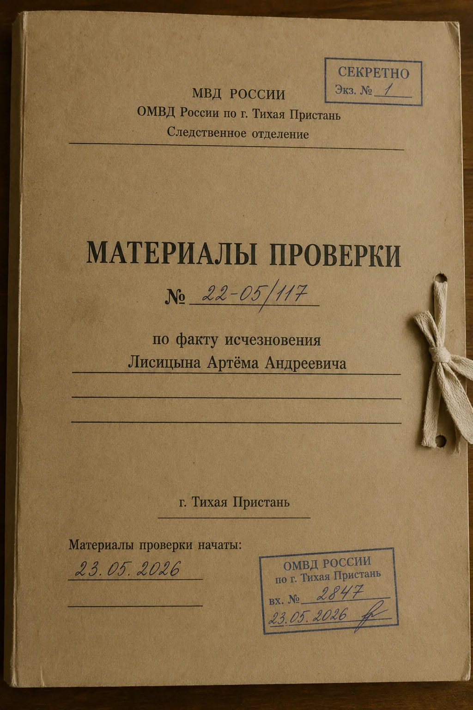
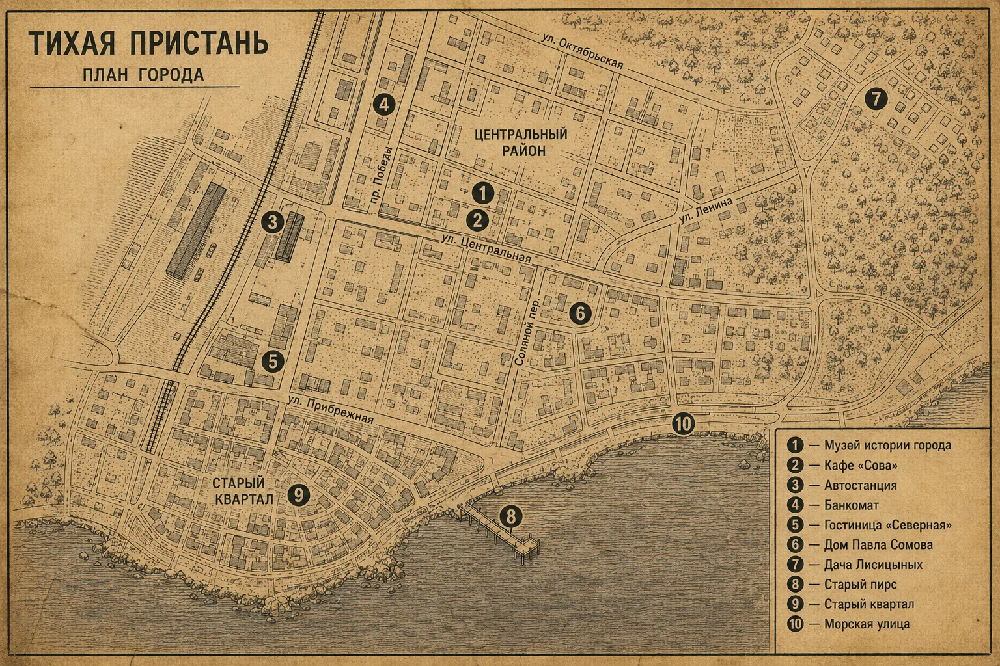

Сводка
Артём Лисицын, реставратор городского музея, пропал вечером 22 мая 2026 года.
Утром 23 мая его телефон нашли у автостанции. В деле есть протоколы осмотра, камеры, переписки, документы по старому зданию и объяснения людей, связанных с Артёмом.

Фигуранты
Материалы дела
Материалы расположены без тематической группировки. Карточки можно перетаскивать и отмечать как важные или неважные.
Карта и адреса

Адреса из материалов
- Музей истории города — ул. Центральная, 14
- Кафе «Сова» — ул. Центральная, 12
- Автостанция — пл. Вокзальная, 1
- Банкомат — пр. Победы, 18
- Гостиница «Северная» — ул. Прибрежная, 4
- Дом Павла — Соляной пер., 3
- Дача родителей Лисицыных — пос. Сосновка, ул. Лесная, 6
- Старый пирс
- Морская улица
Заметки следователя
Проверка версии
Ответьте на вопросы по материалам дела и нажмите «Проверить» — вы увидите, насколько ваша версия сходится с материалами, и что произошло на самом деле.